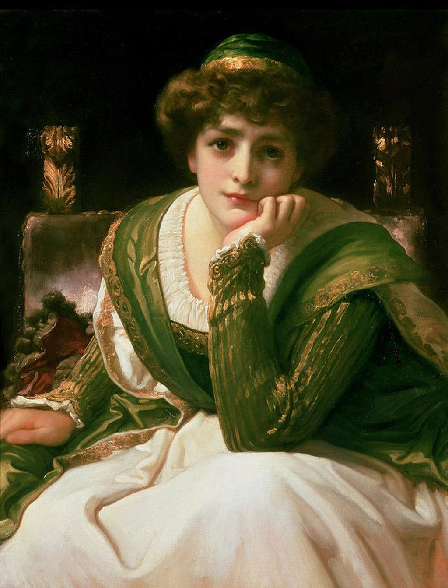

<head>
<meta charset="UTF-8" />
<meta name="keywords" content="drawing, painting" />
<meta name="description" content="drawings by Sunjy" />
<title>Sunjy</title>
<link rel="shortcut icon" type="image/x-icon" href="../../mImages/mCommon/favicon.ico" media="screen" />
<link rel="stylesheet" type="text/css" href="../../mCsses/mCommon/mCssA.css" />
<link rel="stylesheet" type="text/css" href="../../mCsses/mCommon/mCssB.css" />
<link rel="stylesheet" type="text/css" href="../../mCsses/mCommon/mCssC.css" />
<link rel="stylesheet" type="text/css" href="../../mCsses/mCommon/mCssD.css" />
<link rel="stylesheet" type="text/css" href="../../mCsses/mContent/mCssA.css" />
<link rel="stylesheet" type="text/css" href="../../mCsses/mContent/mCssB.css" />
<link rel="stylesheet" type="text/css" href="../../mCsses/mContent/mCssC.css" />
<link rel="stylesheet" type="text/css" href="../../mCsses/mContent/mCssD.css" />
</head>
<script type="text/javascript" src="../../mScripts/mContent/mContentAA.js" /></script>
<script type="text/javascript" src="../../mScripts/mContent/mContentAB.js" /></script>
<script type="text/javascript" src="../../mScripts/mContent/mContentAC.js" /></script>
<script type="text/javascript" src="../../mScripts/mContent/mContentAD.js" /></script>
<script type="text/javascript"></script> 
<script type="text/javascript">
document.write('<div class="mImgAbsolute"></div>');
/*
document.write('<p class="mFontSizeBColor" />From a white paper...</p>');
document.write('<table class="center"><tr><td>');
document.write('');
document.write('</td></tr></table>');
*/
</script>


<script type="text/javascript">
document.write('<p class="mFontSizeBColor" />Desdemona</p>');
document.write('<p class="mFontSizeSColor" />“Desdemona” by Frederic Leighton depicts the Venetian beauty from William Shakespeare’s play Othello which was written in 1601 – 1604.<br><br>Desdemona’s story starts when she enrages her father, a Venetian senator, when she elopes with Othello. Othello is a brave soldier of Moorish background in the service of the Venetian Republic, but several years her senior.<br><br>When Othello is deployed to Cyprus in the service of the Republic of Venice, Desdemona accompanies him. His ensign then manipulates her husband into believing she is an adulteress.<br><br>Othello has its source in a 1565 Italian tale, which may have been based on an actual incident occurring in Venice about 1508.<br><br>The only named character in the original story is “Disdemona.” The name derives from Greek, which means “ill-fated, unfortunate.”<br><br>In the original tale, the ensign lusts after Disdemona and is spurred to revenge when she rejects him. <br><br>While Shakespeare followed the original tale’s influence in composing Othello, he deviated significantly in many details. <br><br>In Shakespeare’s play, Desdemona is deeply upset by her husband’s attacks but continues to assert her love.<br><br>In the final act, Othello tells her that he knows she has been unfaithful and is going to kill her.<br><br>Despite Desdemona’s claims of innocence, Othello refuses to believe her. Othello strangles Desdemona in his paranoia.<br><br>Eventually, Othello learns of Desdemona’s faithfulness after all the lies have been exposed, and he commits suicide.<br><br>The role of Desdemona has attracted many notable actresses through the centuries, and Margaret Hughes (1645 – 1719), the first professional actress on the English stage, has the distinction of being the first to perform the role in 1660.<br></p>');
document.write('<table class="center" /><tr><td>');
document.write('<br>Desdemona’s story starts when she enrages her father, a Venetian senator, when she elopes with Othello. Othello is a brave soldier of Moorish background in the service of the Venetian Republic, but several years her senior.<br><br>When Othello is deployed to Cyprus in the service of the Republic of Venice, Desdemona accompanies him. His ensign then manipulates her husband into believing she is an adulteress.<br><br>Othello has its source in a 1565 Italian tale, which may have been based on an actual incident occurring in Venice about 1508.<br><br>The only named character in the original story is “Disdemona.” The name derives from Greek, which means “ill-fated, unfortunate.”<br><br>In the original tale, the ensign lusts after Disdemona and is spurred to revenge when she rejects him. <br><br>While Shakespeare followed the original tale’s influence in composing Othello, he deviated significantly in many details. <br><br>In Shakespeare’s play, Desdemona is deeply upset by her husband’s attacks but continues to assert her love.<br><br>In the final act, Othello tells her that he knows she has been unfaithful and is going to kill her.<br><br>Despite Desdemona’s claims of innocence, Othello refuses to believe her. Othello strangles Desdemona in his paranoia.<br><br>Eventually, Othello learns of Desdemona’s faithfulness after all the lies have been exposed, and he commits suicide.<br><br>The role of Desdemona has attracted many notable actresses through the centuries, and Margaret Hughes (1645 – 1719), the first professional actress on the English stage, has the distinction of being the first to perform the role in 1660.<br>" />');
document.write('</td></tr></table>');
</script>


